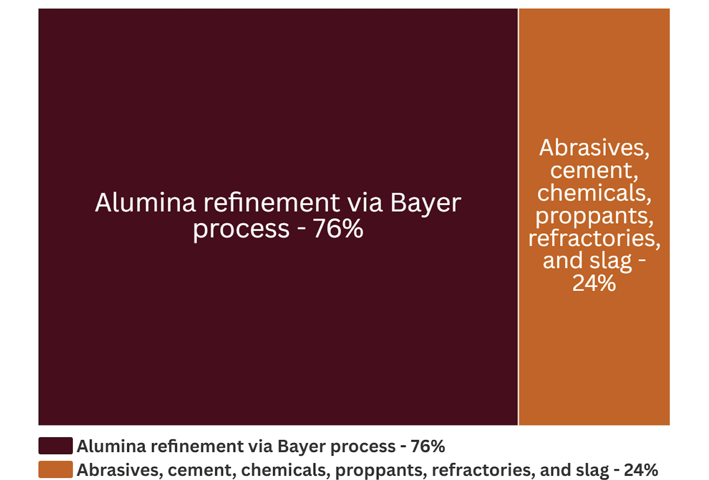

Bauxite is a sedimentary rock that hosts aluminum hydroxide minerals, collectively referred to as alumina Al(OH)3. There are many forms of alumina minerals including gibbsite and diaspore. Bauxite serves as the raw ore, alumina is the refined intermediate product, and aluminum is the metallic element.[1][2]
Where was bauxite discovered?
Before 2000 BC, other aluminum minerals, such as alum, a sulfate salt, were mined in ancient Egypt for dying and ceramic work. Bauxite was discovered in 1821 in France by a geologist named Pierre Berthier. Industrial-scale mining of bauxite ramped up after 1887 due to the work of Austrian chemist Karl Josef Bayer, who discovered that aluminum oxides can be obtained from leaching crushed bauxite with hot, pressurized sodium hydroxide.[3][4]
Screenshot via Google Earth
What is bauxite used for?
What industries use bauxite?
Data from USGS National Minerals Information Center 2025
How much bauxite has been mined?
Cumulative Bauxite Mined by Country in Metric Tons
Data From British Geological Survey (1913-2019)